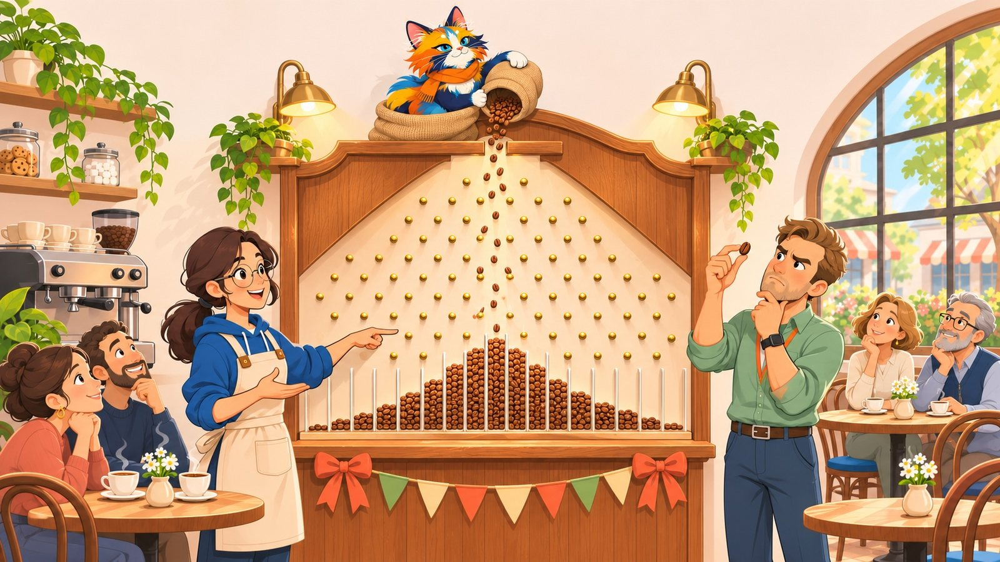
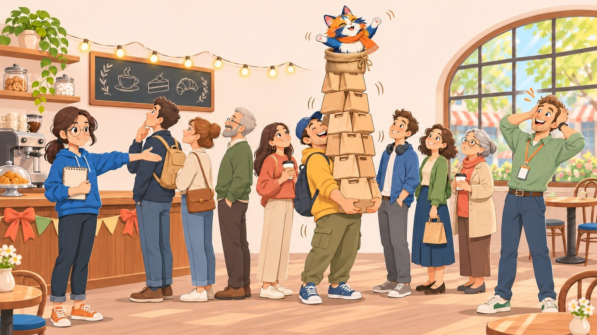
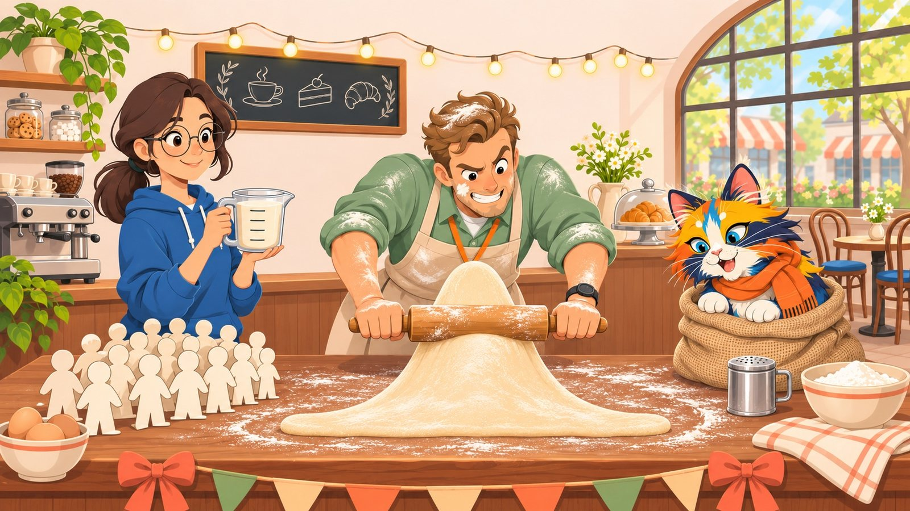

Сначала вспомним
В понедельник кафе запустило новое меню завтраков. Во вторник утром заказали 432 завтрака, в понедельник — 400 (+8%). Что можно сказать?
Это сравнение «до и после». Понедельник и вторник отличаются сами по себе, и 32 лишних завтрака могли прийти без всякого меню. Чтобы узнать эффект, нужно сравнивать одновременно и делить гостей монеткой — это было в шаге 1.
Гостей делят на группы хешем от id и названия эксперимента. Гость зашёл в приложение утром и ещё раз вечером. Какую версию он увидит вечером?
От одного и того же id и названия эксперимента хеш всегда даёт одно и то же число, поэтому гость весь тест видит одну версию. Это «монетка, которая помнит» из шага 2.
Шаг 4 из 11
Толпа предсказуема
После шага ты сможешь объяснить, почему среднее по толпе предсказуемо, а один гость — нет.

Один гость за неделю не заказывает ничего, другой — двадцать раз. Почему же среднее по тысяче таких гостей можно предсказать? В шаге 3 мы видели: разница между одинаковыми группами прыгает. Но прыгает она не как попало. У шума есть форма, и на этой форме держится весь анализ A/B‑тестов.
Один гость непредсказуем
Вот сколько заказов делают гости приложения за неделю. Больше половины не заказывают ничего, многие — один-два раза, а редкие фанаты — десять и больше. В среднем выходит около одного заказа на человека.
Больше половины гостей за неделю не заказывают ничего
По горизонтали — заказов за неделю, по вертикали — доля гостей.
Угадать, сколько закажет случайный гость, невозможно. А если взять 100 случайных гостей и посчитать их среднее? И повторить так много раз? Какой формы будет гистограмма этих средних?
Выбери вариант.
Корпоратив в группе B
Средний чек — главная метрика многих тестов. Вот маленький тест нового меню: по 20 обычных заказов в группах A и B. Меню на самом деле ничего не меняет. Посчитаем по каждой группе две вещи: среднее — сумму, делённую на число заказов, — и медиану, то есть чек ровно посередине, если выстроить заказы от меньшего к большему.
А теперь в группу B случайно попадает корпоративный заказ на 50 000 ₽. Что покажет отчёт теста?
Чеки заказов групп A и B: среднее и медиана
В тесте средний чек вырос на 12%, а медиана не изменилась. Что проверить первым?
Когда среднее растёт, а медиана стоит, часто виноваты несколько гигантских заказов. Но бывает и иначе: фича могла поднять чек части гостей. Например, каждый десятый стал брать десерт за 600 ₽: среднее выросло, а медиана такого не видит. Поэтому сначала смотрят на выбросы, а перед расчётом их ограничивают: всё, что выше 99% заказов, считают по этому порогу. Иначе исход теста решит один корпоратив.
Идея из книги: Владимир Савельев, «Статистика и котики»
Сколько драже в банке
На кассе стоит банка с драже, и Котейка устроил конкурс: кто ближе угадает, сколько их там, получит банку. Угадай и ты.
Догадки 200 гостей, гистограмма
Идея из книги: Дэвид Шпигельхалтер, «Искусство статистики»
Собираем средние
Выбери, сколько гостей брать за раз. Каждая выборка даёт одно число — среднее число заказов у этих гостей. Складывай эти числа в гистограмму.
Средние по выборкам, гистограмма
Крайности гасят друг друга

В выборку из ста гостей обычно попадает один-два фаната, около трёх десятков «один-два раза» и много тех, кто ничего не заказал. Если фанатов случайно оказалось трое, среднее немного вырастет. Если ни одного, немного упадёт. Сильно отклониться среднее может, только если много случайностей сложатся в одну сторону сразу, а это редкость.
Поэтому средние кучкуются вокруг настоящего среднего, а чем дальше от него, тем реже. Так и получается колокол. Для него нужно, чтобы людей было много и они не зависели друг от друга.
Есть и оговорка: среди значений не должно быть редких гигантских. Один корпоратив на 300 капучино сдвигает среднее сильнее, чем сотня обычных гостей. Чем тяжелее такой хвост, как у выручки с банкетами, тем больше людей нужно, чтобы колокол наступил. Заказам на гостя хватает и сотни человек: это было видно на прошлой карточке.
Что у нас одно наблюдение
Три гостя за месяц сделали по 8 заказов. Каждая точка — чек одного заказа, цвет — гость.
Чеки одного гостя похожи друг на друга
Монетка в эксперименте бросается за человека. Сколько здесь независимых наблюдений?
Группа назначается человеку, и его заказы похожи друг на друга: один берёт только кофе, другой — дорогие завтраки. Поэтому считаем по людям — или по корзинам людей, как на следующей карточке. Если считать по заказам, шум покажется меньше настоящего, и «значимыми» станут пустые эффекты.
Как это используют платформы экспериментов

В эксперименте одна группа — это один набор гостей, и среднее по ней одно. Как узнать, насколько оно шатается? Многие платформы делают так: раскладывают гостей группы по 256 корзинам тем же хешем от id и считают среднее в каждой корзине. Получается 256 «маленьких экспериментов» сразу.
Средние по 256 корзинам, заказов на гостя
Три вопроса про колокол
Метрика — выручка на гостя за месяц. У большинства 0, у некоторых тысячи. Ляжет ли колоколом среднее по 50 000 гостей, если повторять эксперимент много раз?
Колокол получается у среднего, а не у отдельных людей. Чем тяжелее хвост метрики, тем больше людей нужно, чтобы колокол наступил. 50 000 гостей обычно хватает, если пара гигантских чеков не решает всё. Поэтому выбросы и ограничивают, как на карточке «Один заказ на 50 000 ₽».
Заказы одного гостя за неделю распределены колоколом?
У одного человека распределение какое угодно. Колоколом ложится среднее по многим людям.
Зачем платформа раскладывает гостей группы по корзинам?
Шум корзины никуда не убирают, его измеряют. По разбросу между корзинами видно, насколько шатается среднее всей группы. И считать так быстро и дёшево.
Один непредсказуем, толпа предсказуема
- Заказы одного гостя распределены как угодно: много нулей и длинный хвост.
- Среднее по многим независимым гостям ложится колоколом вокруг настоящего среднего. Крайности гасят друг друга.
- Если бывают редкие гигантские значения, например банкеты в выручке, людей для колокола нужно больше. Поэтому выбросы ограничивают.
- Чем больше гостей в выборке, тем уже колокол.
- Медиана не боится выбросов: медиана догадок толпы ближе к правде, чем большинство отдельных догадок, а среднее тянут вверх единицы с огромными числами.
- Одно наблюдение — это человек, а не заказ: группа назначается человеку, и его заказы похожи друг на друга.
- Платформы экспериментов раскладывают гостей по корзинам и по разбросу между корзинами видят, насколько шатается среднее.
Теперь у того, что мы сделали руками, есть названия:
- Нормальное распределение
- тот самый колокол: значения кучкуются вокруг середины и редеют к краям
- ЦПТ
- центральная предельная теорема: среднее многих независимых величин распределено почти нормально, если среди значений нет редких гигантских; чем тяжелее хвост, тем больше нужно людей
- Бакет
- корзина, в которую гость попадает по хешу; разброс средних по бакетам показывает шум
